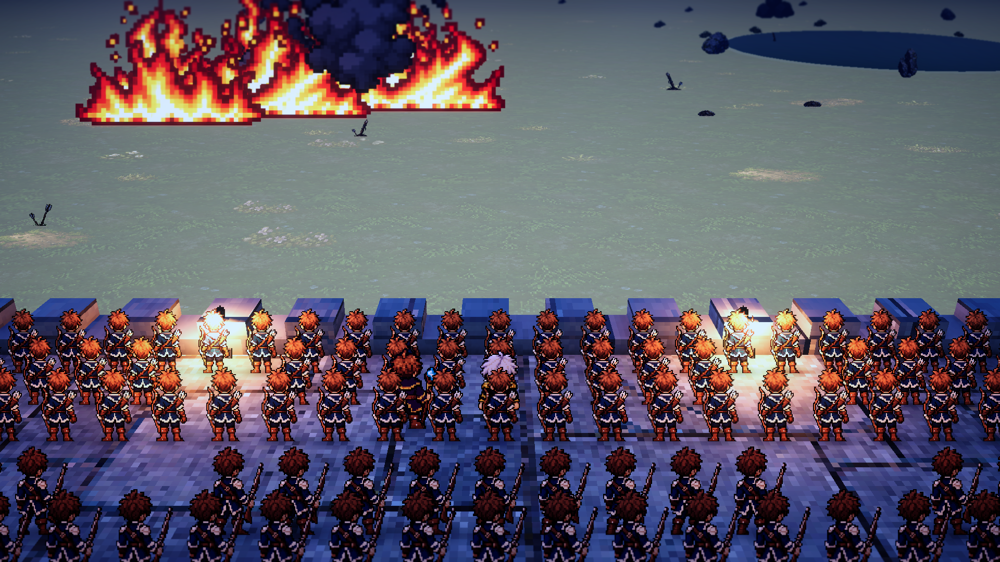
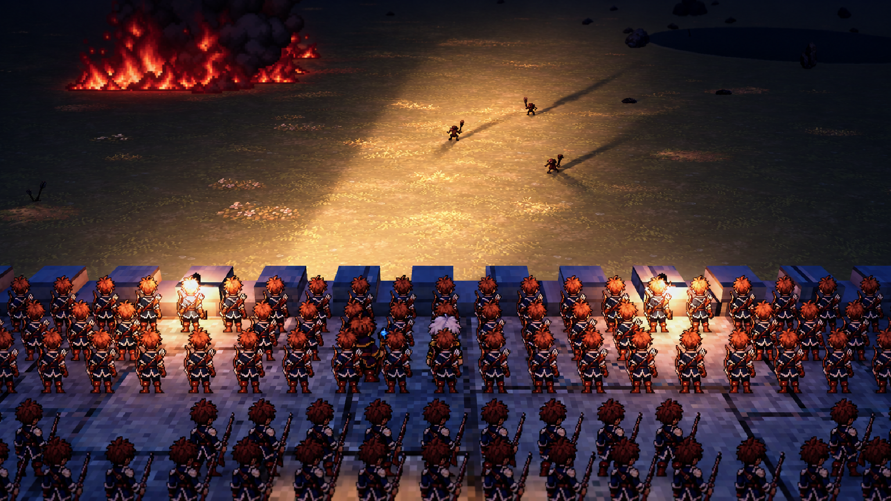
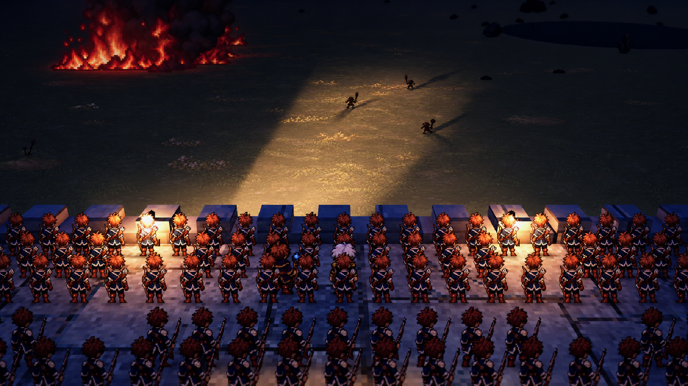
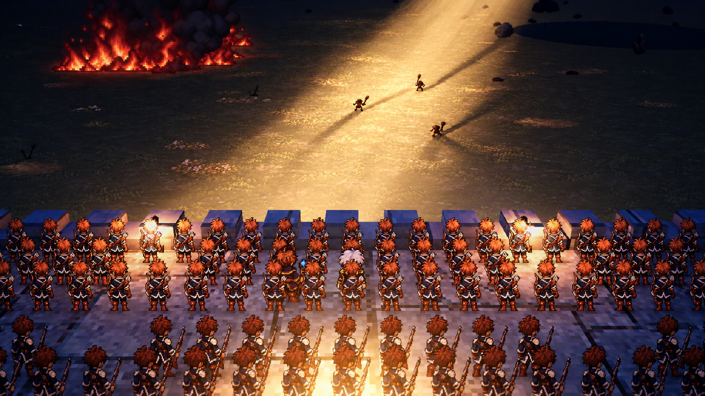
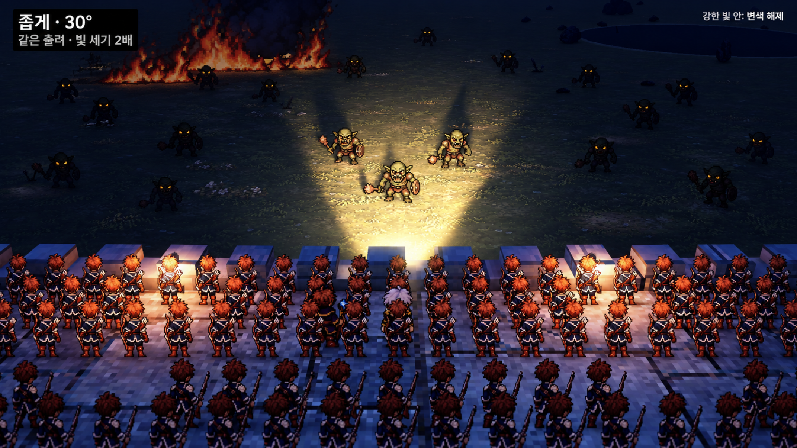
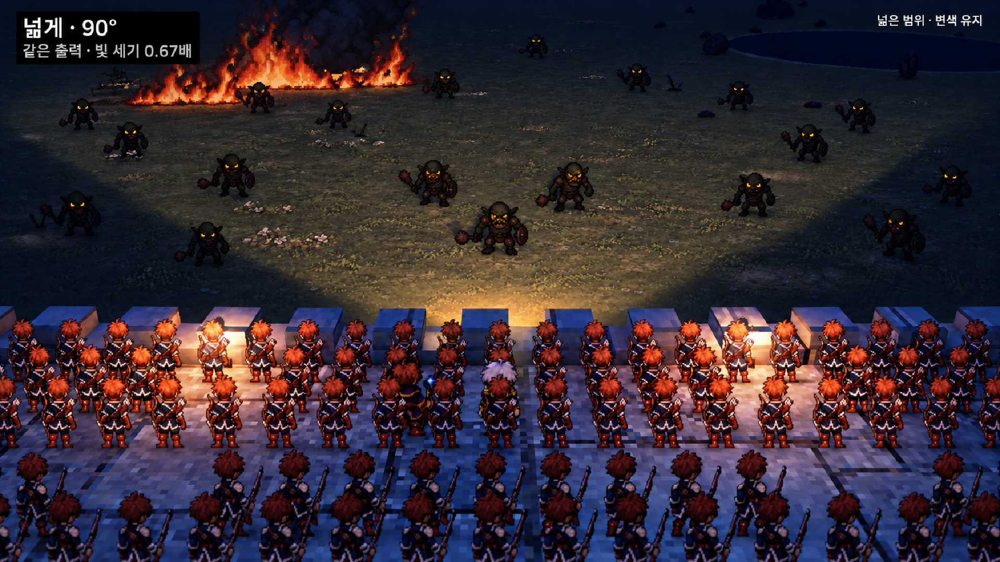

질문용
사진을 보고 답해 주실 질문만 모았습니다. 답을 주시면 필요한 문서와 게임에 반영하고, 그 질문은 이 문서에서 지웁니다. 마지막 갱신 2026-10-22.
질문 1실제 게임의 밤을 더 어둡게 할까요?
지금 게임의 밤 밝기는 0.65라 꽤 밝습니다(왼쪽). 오른쪽은 코덱스가 실제 화면 위에 옥토패스처럼 어둡게 그려 본 참고 그림입니다.

지금 게임 밤 (밝기 0.65)

참고: 어둡고 빛이 닿는 곳만 또렷한 밤
추천: 오른쪽처럼 어둡게. 등대 빛이 게임의 중심이 되려면 주변이 어두워야 합니다.
질문 2어느 빛 느낌이 마음에 드시나요?
등대 빛줄기의 모양과 세기 참고 그림입니다. 마음에 드는 것과 아닌 것을 말씀해 주세요.

A. 출력 40% (첫 요새 첫 밤)

B. 출력 100% (두 번째 요새 점화의 밤)

C. 좁게 모은 빛 (30도, 세기 2배)

D. 넓게 퍼진 빛 (90도, 세기 0.67배)
그 밖에 답을 기다리는 질문 (사진 없음)
- 밤에 졌을 때 그 밤에 잃은 병력·성벽 피해를 되돌릴까요, 남길까요? 추천: 남기기
- 처음 읽는 문서를 고칠 안대로 바꿀까요?
- 주 대상 기기: 컴퓨터용인가요, 휴대폰용인가요?
- 개발 브랜치 작업을 본 브랜치(main)에도 올릴까요?
- 플레이 의견 20가지 설계의 질문 14개가 아직 유효한가요?
- 루프 엔지니어링을 적용할까요?
- 한글 글꼴을 정해 주시겠어요? (지금은 맑은 고딕 임시)
- 작은 확인: 총안 18칸 감소, 대포 옮긴 자리 다음 전투에 유지, 카메라 흐림과 대포 1.5초, 계약 초안 승인